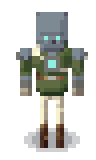
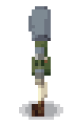
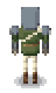
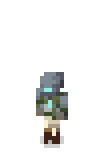
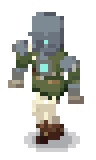

Forged
Ancient constructs of stone and steel, woken by forge-craft and fragments of godsbone.
Ancient constructs of stone and steel, woken by forge-craft and fragments of godsbone. The oldest of them were made in Varnhalt's own forge during the Burning Years, to fight the demons where flesh could not. Most slept for centuries in the foundations of Varkesh until Ironreach dug them up and woke them. They serve the Empire loyally, but every Forged carries a maker's mark it cannot read, and many wonder whose they really are.
Classes
Class limits per race: TBD.
Gallery









